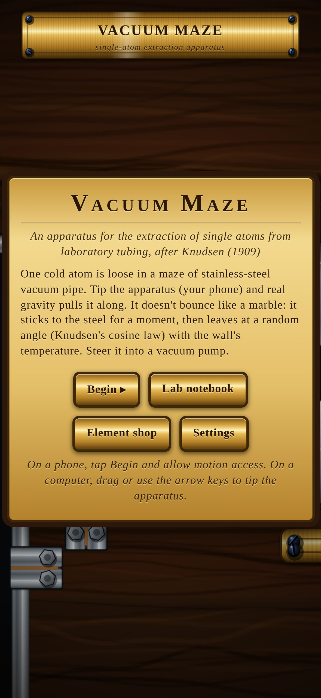
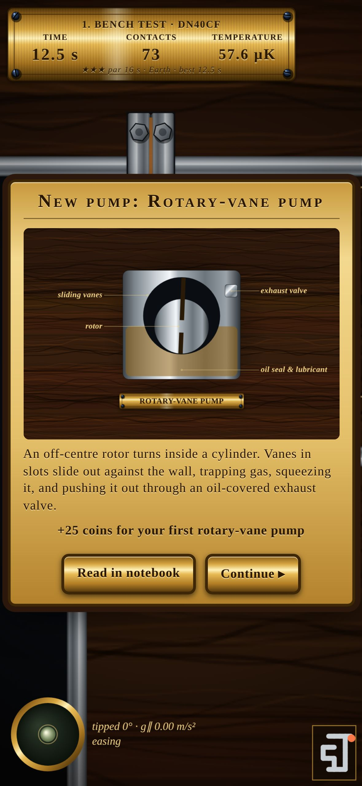
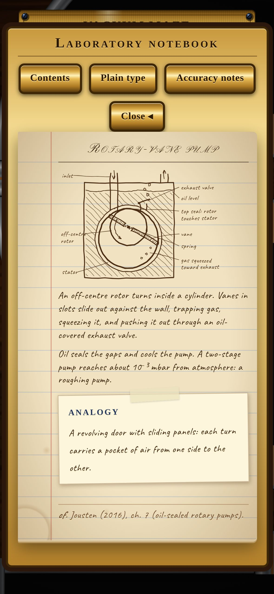
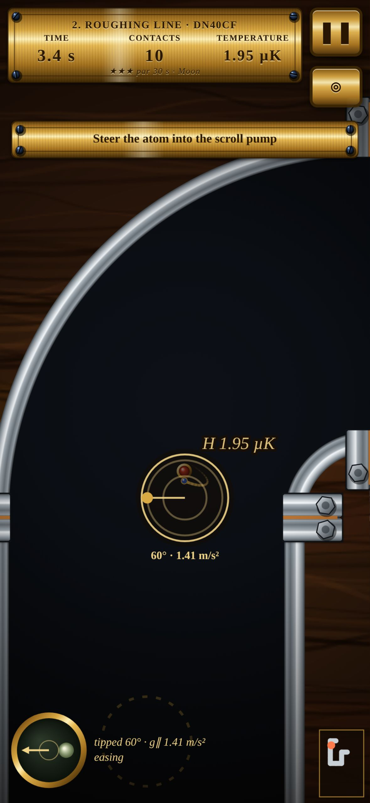
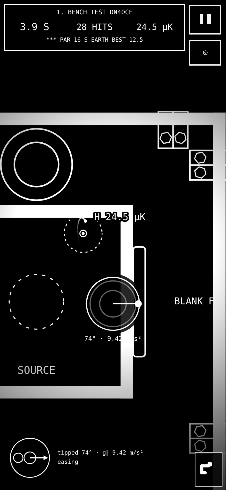

Vacuum Maze
Tilt one ultracold atom through a maze of vacuum tubing.
The browser version is free for the first three levels. The full game is coming to iPhone, Android and Steam.
A sibling of Maxwell's Demon. One ultracold atom drifts in high vacuum through a maze of stainless-steel laboratory tubing: ConFlat flanges, elbows, tees, crosses, viewports, gate valves and gauges. Tilt the phone to give it gravity and work it to the turbo pump (the exit).
The atom obeys the same wall rules as Maxwell's Demon: it sticks to the wall for a random residence time, leaves at the wall-heated temperature, and leaves in a cosine (Knudsen) or cos² direction about the local wall normal. So a wall contact can help, or it can throw the atom straight back up the pipe.
Its in-game notebook, Laboratory notebook, is reproduced in full in our Notebook.
Screenshots










